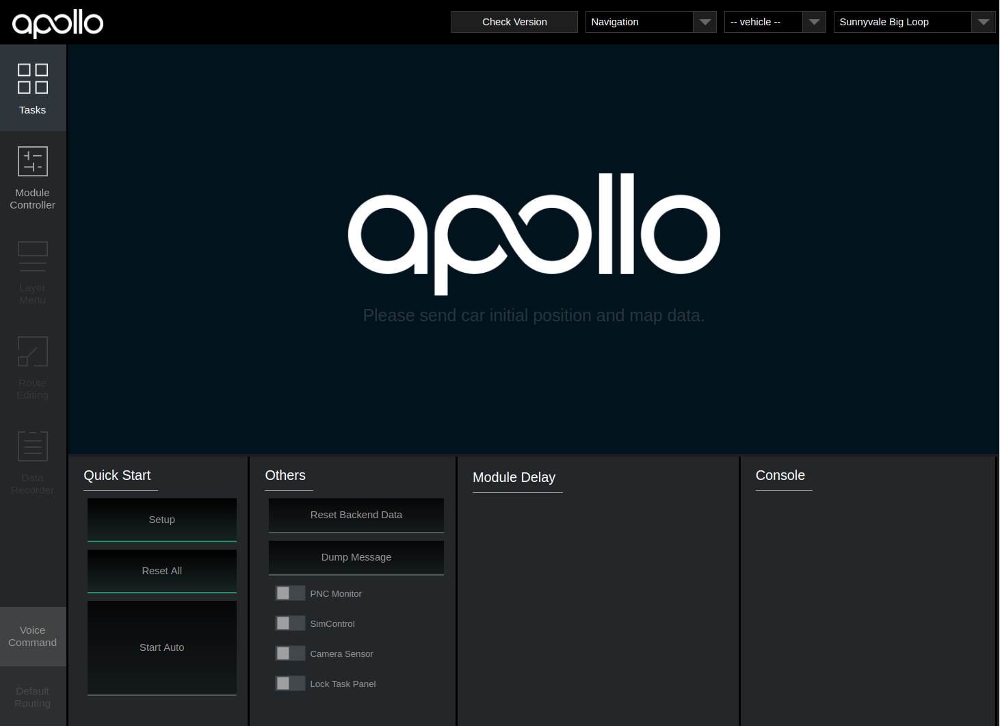
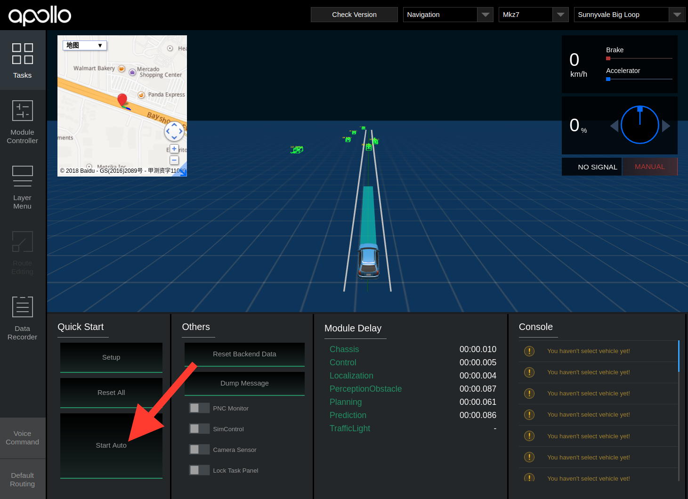

Apollo 3.0 快速入门指南
该指南是帮助使用者在车辆上安装和启动Apollo 3.0软硬件套件的用户手册。
这个快速入门指南专注于Apollo 3.0新功能的介绍。对于Apollo的通用概念，请参考Apollo 1.0 快速入门指南。
内容
车辆校准指南
在进行车辆测试前必须确保已经校准了所有的传感器，关于传感器校准，请参考Apollo 2.0 传感器标定方法使用指南。
硬件和软件安装
请参考Apollo 3.0 硬件与系统安装指南获取安装硬件组件的步骤，参考Apollo软件安装指南获取软件安装步骤。
DreamView的使用
关于DreamView使用时的相关问题请参考DreamView用法介绍。
上车测试
- 将一个外部磁盘驱动器接入主机任一可用USB接口。
- 首先启动车辆，然后启动主机。
- 启动发布版本的Docker容器。
- 启动DreamView。
打开浏览器（譬如Chrome）然后在地址栏输入 http://localhost:8888

- 选择模式、车辆和地图。

附注：在进行任何测试前会要求使用者设置参数。点击下拉列表并选择想要使用的导航模式，高清地图和车辆。该列表数据在HMI config file中定义。
附注：允许使用者在HMI的右侧面板中更改参数，但是需要点击右上角的Reset All按钮重启该系统以使参数生效。
- 启动模块。
点击
Setup按钮。

附注：进入 Module Controller 面板，检查是否所有的模块和硬件已经准备好（在离线环境中，某些硬件模块如GPS， CANBus， Velodyne，Camera和Radar不会显示）（为了获得更佳的GPS信号，可能需要车辆运行一段距离。）
-
在
Default Routing中选择期望的路线。 -
在Tasks面板中，点击
Start Auto（将要进入自动驾驶模式时需要十分小心谨慎）。

-
自动驾驶测试结束后，在Tasks面板中点击
Reset All，关闭所有窗口，关闭主机。 -
移除磁盘驱动器。